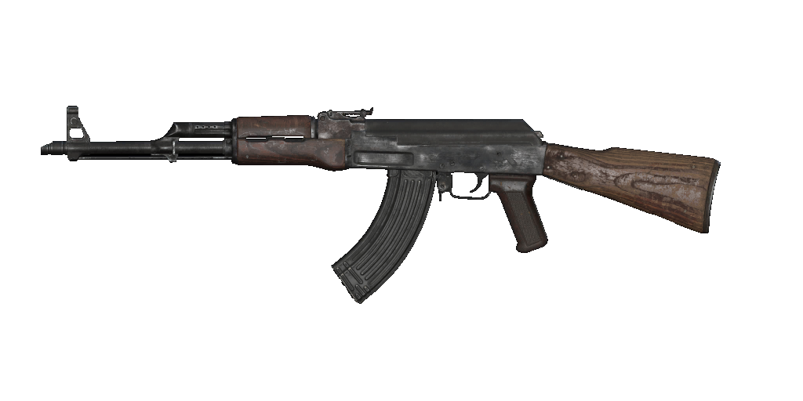

Doporučený loadout
Muzzle
GRU SUPPRESSOR
Barrel
18.2" TAKEDOWN
Optic
AXIAL ARMS 3X
Underbarrel
SPETSNAZ GRIP
Ammunition
45 RND SPEED MAG
Foto
Statistiky
Reálné informace
AK-47 nebo zjednodušeně jako kalašnikov, je nejpoužívanější a jedna z nejznámějších útočných pušek světa. Sestrojena byla v SSSR mladým sovětským konstruktérem Michailem Timofejevičem Kalašnikovem.
V roce 1946 byl AK-47 podroben oficiálním vojenským zkouškám a v roce 1948 byla verze s pevnou pažbou uvedena do aktivní služby ve vybraných jednotkách Sovětské armády. V roce 1949 byl AK-47 oficiálně přijat sovětskými ozbrojenými silami a využívala ho i většina členských zemí Varšavské smlouvy.
I po sedmdesáti letech jsou tento model a jeho varianty stále široce používanými a nejpopulárnějšími útočnými puškami na světě. AK-47 byl vyráběn v mnoha zemích, dočkal se služby v ozbrojených složkách, stejně jako nepravidelných silách po celém světě a byl základem pro vývoj mnoha dalších typů.